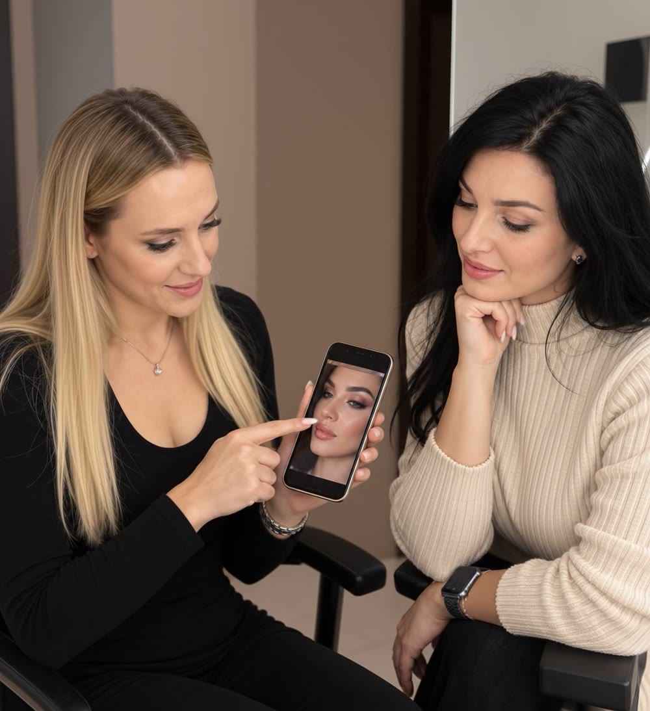
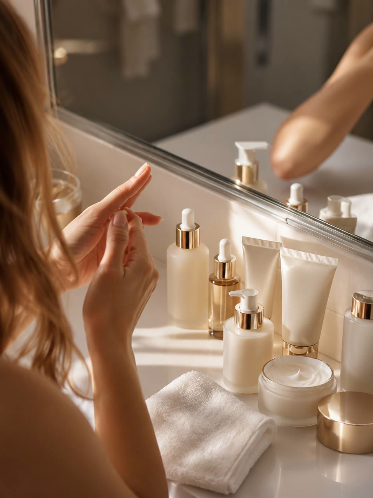

Tri navade za lepšo kožo in lepši videz
Three habits for better skin and a better look
Три привычки для лучшей кожи и лучшего вида
Obstajajo tri stvari, ki jih ponovim skoraj vsaki stranki in ki naredijo več razlike kot katerikoli izdelek: temeljito čiščenje kože zvečer, pravočasna korekcija in jasna fotografija želenega videza. V tem članku razložim, zakaj prav te tri.
There are three things I repeat to almost every client, and they make more difference than any product: thorough evening cleansing, timely correction, and a clear photo of the look you want. This article explains why these three.
Есть три вещи, которые я повторяю почти каждой клиентке, и они дают больше разницы, чем любое средство: тщательное вечернее очищение, своевременная коррекция и понятное фото желаемого результата. В этой статье объясняю, почему именно они.

1. Čistite kožo zvečer
1. Cleanse your skin in the evening
1. Очищайте кожу вечером
Čez dan se na koži naberejo ličila, sončna zaščita, sebum, prah in mestni zrak. Če jih zvečer ne odstranite, se usedlina pomeša s sebumom, zamaši pore in koža postane dolgočasna, utrujena in nagnjena k mozoljem. Naslednji dan se tudi ličilo ne usede lepo — pogosto je kriva prav neprečiščena koža od prejšnjega večera.
During the day, makeup, sunscreen, sebum, dust and city air build up on the skin. If you do not remove them in the evening, that layer mixes with sebum, clogs pores and the skin looks dull, tired and prone to breakouts. Makeup also sits worse the next day — very often the cause is skin that was not properly cleansed the night before.
За день на коже скапливаются макияж, солнцезащитный крем, себум, пыль и городской воздух. Если вечером их не снять, эта смесь соединяется с себумом, забивает поры, и кожа выглядит тусклой, уставшей, склонной к высыпаниям. И макияж на следующий день ложится хуже — очень часто причина именно в плохо очищенной коже с вечера.

Zjutraj zadostuje nežno umivanje. Koža se ponoči obnavlja in ne potrebuje še enega agresivnega čiščenja — pretiravanje s čistilnimi geli in pilingi vsak dan kožo le izsuši in naredi občutljivo.
In the morning, a gentle wash is enough. The skin regenerates at night and does not need another aggressive cleanse — overusing cleansers and daily scrubs only dries the skin out and makes it sensitive.
Утром достаточно мягкого умывания. Ночью кожа восстанавливается и не требует ещё одного агрессивного очищения — ежедневные гели и скрабы только пересушивают её и делают чувствительной.
Kako najbolje: najprej odstranite ličila z oljem ali micelarno vodo, nato umijte z nežnim gelom v mlačni vodi. Enkrat ali dvakrat na teden dodajte blag piling, na koncu pa vedno hidratantno kremo. In nikoli ne spite z ličili — tudi če ste utrujeni, je minuta za čiščenje najboljša naložba v videz.
The best way: first remove makeup with an oil or micellar water, then wash with a gentle gel in lukewarm water. Add a mild exfoliant once or twice a week and always finish with a moisturiser. And never sleep in makeup — even when you are tired, one minute of cleansing is the best investment in your look.
Лучше так: сначала снять макияж маслом или мицеллярной водой, потом умыться мягким гелем в тёплой воде. Раз или два в неделю — мягкий пилинг, и всегда в конце увлажняющий крем. И никогда не спать с макияжем: даже если очень устали, одна минута на очищение — лучшая инвестиция во внешний вид.
2. Rezervirajte termin, preden se oblika izgubi
2. Book before the shape is lost
2. Записывайтесь, пока форма не потерялась
Pri laminaciji trepalnic je pravi interval 6–8 tednov. Trepalnice rastejo v ciklih: ko zrastejo nove, se smer kodra spremeni in pojavijo se vrzeli. Če počakate dlje, se oblika porazgubi, tretma pa traja dlje in je lahko manj predvidljiv. Redna osvežitev na 6–8 tednov ohrani enak videz skozi vse leto.
For lash lamination the right interval is 6–8 weeks. Lashes grow in cycles: when new lashes come through, the direction of the curl changes and gaps appear. If you wait longer, the shape is lost and the treatment takes more time and is less predictable. A regular refresh every 6–8 weeks keeps the same look all year round.
Для ламинирования ресниц правильный интервал — 6–8 недель. Ресницы растут циклами: когда прорастают новые, направление завитка меняется и появляются пустоты. Если ждать дольше, форма теряется, а процедура занимает больше времени и результат менее предсказуем. Регулярное обновление раз в 6–8 недель сохраняет вид круглый год.
Pri obrveh je ritem hitrejši: korekcija oblike in barvanje vsakih 4–6 tednov, odvisno od tega, kako hitro vam rastejo dlačice. Nove dlačice nad in pod linijo se pokažejo že v treh do štirih tednih — če jih pustimo predolgo, se linija razširi in izgubi čistost, barva pa zbledi. Zato je redna korekcija tista, ki ohrani obliko.
Brows follow a faster rhythm: brow shaping and tinting every 4–6 weeks, depending on how fast your hair grows. New hairs above and below the line show up within three to four weeks — if left too long, the line widens, loses its sharpness and the colour fades. Regular correction is what keeps the shape.
С бровями ритм быстрее: коррекция формы и окрашивание каждые 4–6 недель, в зависимости от того, как быстро растут волоски. Новые волоски над линией и под ней появляются уже через три-четыре недели — если тянуть, линия расширяется, теряет чёткость, а краска бледнеет. Именно регулярная коррекция держит форму.
Praktičen nasvet: nov termin rezervirajte takoj na koncu tretmaja in si ga zapišite v telefon. Tako ne izgubite ritma in ne pridete takrat, ko je treba vse začeti znova.
A practical tip: book your next appointment right at the end of the treatment and put it in your phone. That way you keep the rhythm and never arrive when everything has to start over.
Практический совет: записывайтесь на следующий раз прямо в конце процедуры и сразу ставьте в телефон. Так вы держите ритм и не приходите тогда, когда всё нужно начинать заново.
3. Prinesite fotografijo
3. Bring a photo
3. Принесите фотографию
Fotografija pove več kot opis. Besede, kot so »naravno, ampak izrazito«, si vsak predstavlja drugače — s sliko se izognemo nesporazumom in izgubljenemu času. Prinesite dve ali tri fotografije: eno, ki vam je zelo všeč, in eno, ki vam ni, da vidim, kje je meja. Povejte tudi, kaj točno vam je na sliki všeč — debelina obrvi, oblika, barva, kodr.
A photo says more than a description. Words like "natural but striking" mean something different to everyone — a picture avoids misunderstandings and wasted time. Bring two or three photos: one you really like and one you do not, so I can see where the line is. Also tell me what exactly you like in the picture — brow thickness, shape, colour, curl.
Фотография скажет больше описания. Слова «естественно, но выразительно» каждый понимает по-своему — с картинкой мы избегаем недопонимания и потерянного времени. Принесите две-три фотографии: одну, которая очень нравится, и одну, которая нет, чтобы я видела границу. Скажите и что именно нравится — толщина бровей, форма, цвет, завиток.
Pri tem velja pošteno pravilo: referenca ni obljuba. Končni videz je vedno prilagojen vašemu obrazu, naravni rasti dlačic, tipu kože in priložnosti — zato je rezultat lahko podoben, nikoli pa kopija z drugega obraza.
One honest rule applies: a reference is not a promise. The final look is always adapted to your face, your natural hair growth, your skin type and the occasion — so the result can be similar, but never a copy of another face.
И честное правило: референс — это не обещание. Итоговый вид всегда подстраивается под ваше лицо, естественный рост волосков, тип кожи и повод — поэтому результат может быть похожим, но никогда не копией с чужого лица.
Kaj še pomaga
What else helps
Что ещё помогает
- vsakodnevna sončna zaščita — tudi pozimi in v mestu,
- dovolj vode in spanec; koža se obnavlja ponoči,
- ne pulite obrvi sami med tretmaji — tanka linija se težko popravi,
- po laminaciji upoštevajte navodila za nego prvih 24–48 ur.
- daily sun protection — even in winter and in the city,
- enough water and sleep; skin regenerates at night,
- do not pluck your brows between treatments — a thin line is hard to correct,
- after lamination, follow the aftercare rules for the first 24–48 hours.
- ежедневная защита от солнца — даже зимой и в городе,
- достаточно воды и сна; кожа восстанавливается ночью,
- не выщипывайте брови сами между процедурами — тонкую линию трудно исправить,
- после ламинирования соблюдайте правила ухода первые 24–48 часов.
Kdaj se prijavite
When to book
Когда записаться
Če se ne spomnite, kdaj ste bili nazadnje na tretmaju, je to običajno znak, da je čas za osvežitev. Podrobnosti o postopkih najdete na straneh laminacija trepalnic v Mariboru, korekcija in barvanje obrvi in ličenje v Mariboru. Termin rezervirajte tukaj.
If you cannot remember when you last had a treatment, that is usually a sign it is time to refresh. Details on the treatments are on the pages lash lamination in Maribor, brow shaping and tinting and makeup in Maribor. Book your appointment here.
Если вы не помните, когда были на процедуре последний раз, — это обычно знак, что пора обновиться. Подробности на страницах ламинирование ресниц в Мариборе, коррекция и окрашивание бровей и макияж в Мариборе. Записаться можно здесь.